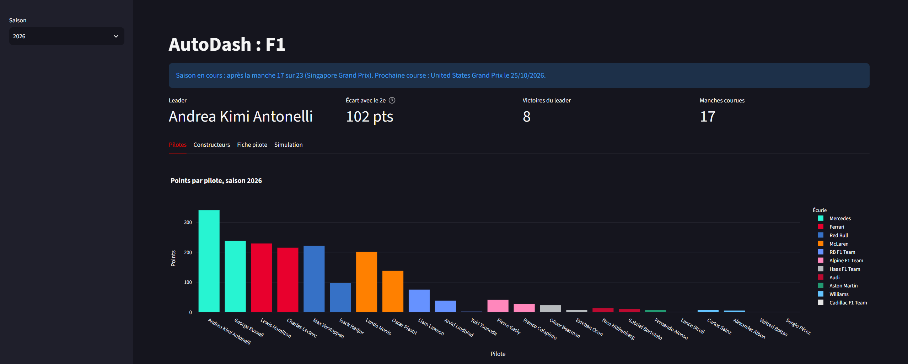

Projet personnelPersonal project
AutoDash
Tableau de bord des statistiques du sport automobile, par saison et par course, avec simulation des dernières manches d'un championnat encore ouvert. Données issues de l'API Jolpica-F1. A statistics dashboard for motorsport, by season and by race, with simulation of the final rounds of a still-open championship. Data from the Jolpica-F1 API.